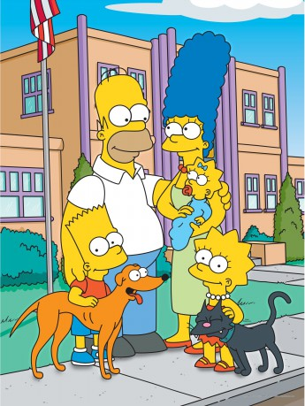

")
Alternativ: The Simpsons
 
 IMDB-Wertung: 8.7 / 10
IMDB-Wertung: 8.7 / 10  Metascore:
Metascore: 
Die Simpsons sind eine typische gelbe amerikanische Familie. Homer ist übergewichtig, liebt das Bier und seine Couch. Mutter Marge umsorgt alle und schmeißt den Haushalt. Sohn Bart hat nichts als Unsinn im Kopf, während seine Schwester Lisa die Klassenbeste ist. Und die kleinste Maggie spricht kein Wort.
Jahr: 1989
Dauer: 21 Minuten
FSK: 12
Land: USA Studio: Fox NetworkTonspuren: MPEG2 - ,
Untertitel:
Auflösung: SD (512x384) Größe: 232 MB
Genre: Komödie, Animation/Trick, TV-Serie
Regisseur: Mike B. Anderson, Mark Kirkland, Steven Dean Moore, Bob Anderson, Matthew Nastuk
Drehbuch: James L. Brooks, Matt Groening, Sam Simon, John Swartzwelder, Dan Greaney
Soundtrack:
Darsteller:
 Dan Castellaneta als Homer Simpson
Dan Castellaneta als Homer Simpson Julie Kavner als Marge Simpson
Julie Kavner als Marge Simpson Nancy Cartwright als Bart Simpson
Nancy Cartwright als Bart Simpson Harry Shearer als Ned Flanders
Harry Shearer als Ned Flanders Hank Azaria als Moe Szyslak
Hank Azaria als Moe Szyslak Tress MacNeille als Dolph
Tress MacNeille als Dolph Russi Taylor als Martin Prince
Russi Taylor als Martin Prince Maurice LaMarche als Additional Voices
Maurice LaMarche als Additional Voices Frank Welker als Santa's Little Helper
Frank Welker als Santa's Little Helper Kelsey Grammer als Sideshow Bob
Kelsey Grammer als Sideshow Bob Kevin Michael Richardson als Security Guard
Kevin Michael Richardson als Security Guard Jon Lovitz als Artie Ziff
Jon Lovitz als Artie Ziff Glenn Close als Mona Simpson
Glenn Close als Mona Simpson Stephen Hawking als Stephen Hawking
Stephen Hawking als Stephen Hawking Stacy Keach als Howard K. Duff VII
Stacy Keach als Howard K. Duff VII Danny DeVito als Herb Powell
Danny DeVito als Herb Powell Anne Hathaway als Jenny
Anne Hathaway als Jenny David Hyde Pierce als Cecil Terwilliger
David Hyde Pierce als Cecil Terwilliger Sarah Silverman als Nikki McKenna
Sarah Silverman als Nikki McKenna Elizabeth Taylor als Maggie Simpson
Elizabeth Taylor als Maggie Simpson James Earl Jones als Narrator
James Earl Jones als Narrator Julia Louis-Dreyfus als Gloria
Julia Louis-Dreyfus als GloriaDatei: X:\SD-Trick-Collections\Die Simpsons\Die Simpsons S01\s01e01 Eine ganz normale Familie.avi seit 24.01.2016
 Alle Filme aus Gruppe 'SD-Trick-Collections\Die Simpsons'
Alle Filme aus Gruppe 'SD-Trick-Collections\Die Simpsons'